Physical AI & Embedded Systems
From Sensors to Actuators – How Machines Perceive and Act
1. What is Physical AI?
Physical AI is the combination of Artificial Intelligence with physical systems that can sense the real world, make decisions, and take physical actions — all in real time. It is the foundation of modern robotics, autonomous vehicles, and smart factories.
Analogy: A normal computer program takes data in and gives data out (digital world). A Physical AI system takes real‑world information (temperature, distance, images) and produces real‑world actions (move a motor, turn on a fan, steer a car).
The Four Pillars of Physical AI
Decision‑making algorithms, ML models, or rule‑based logic that decides what to do.
Devices that read the physical world and convert it into electrical signals.
Convert electrical signals into physical motion or action.
Connects sensing to action, processes data, and uses feedback.
Real‑World Examples
- Self‑Driving Cars (Tesla, Waymo): Cameras + LiDAR → AI → brake/steer/accelerate.
- Robot Arms in Factories (KUKA, ABB): Vision → AI → servo motors pick and place.
- Smart Factories (Industry 4.0): Sensors + AI predictive maintenance.
- Drone Delivery: GPS + accelerometer + barometer → AI flight controller adjusts 4 motors.
- Medical Robots (da Vinci System): Surgeon's movements translated to precise robotic actions.
2. Sensors – The Eyes and Ears
A sensor detects a physical quantity (light, heat, distance) and converts it into an electrical signal that a microcontroller can read.
🔵 Active Sensors (emit energy)
Ultrasonic Sensor (HC-SR04)
Emits ultrasonic sound, measures echo return time → distance. Used for obstacle detection, parking sensors.

LiDAR (Light Detection and Ranging)
Laser pulses create 3D point clouds. Used in self‑driving cars, 3D mapping.
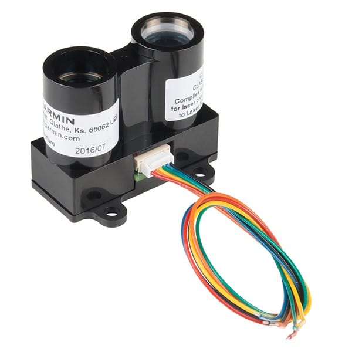
Radar
Radio waves + Doppler effect measure distance and speed. Adaptive cruise control, blind spot detection.
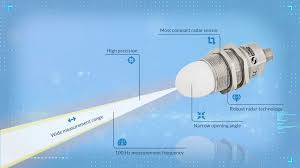
IR Sensor (Active)
IR LED emits light; detects reflection. Line‑following robots, proximity sensors.
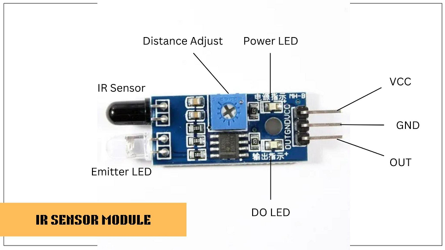
🟢 Passive Sensors (detect existing energy)
LDR (Light Dependent Resistor)
Resistance changes with light intensity. Automatic street lights, camera exposure.
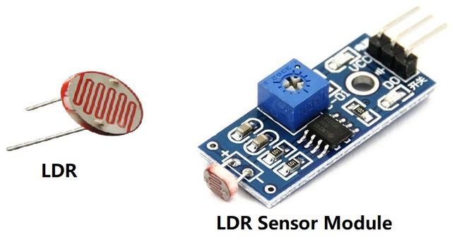
Thermistor
Resistance changes with temperature. 3D printer hotend control, battery temperature monitoring.
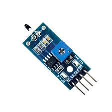
Photodiode
Generates current proportional to light. Optical fiber comm, pulse oximeters.
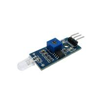
| Criteria | Active Sensors | Passive Sensors |
|---|---|---|
| Energy Source | Emit their own energy | Detect existing energy only |
| Examples | Ultrasonic, LiDAR, Radar, Active IR | LDR, Thermistor, Photodiode |
| Power Need | Higher | Lower |
| Works in Dark? | Yes | Depends (LDR needs light) |
| Cost | Generally higher | Very low |
| Range | Very long (LiDAR 100m+) | Short range |
3. Actuators – The Muscles
Actuators convert electrical signals into physical motion. They are the “output” side of a Physical AI system.
DC Motor
Simple speed control, used in robot wheels, fans, drills. Cheap and easy.

Servo Motor
Precise position control (0‑180°). Robot arms, RC cars. Built‑in feedback.
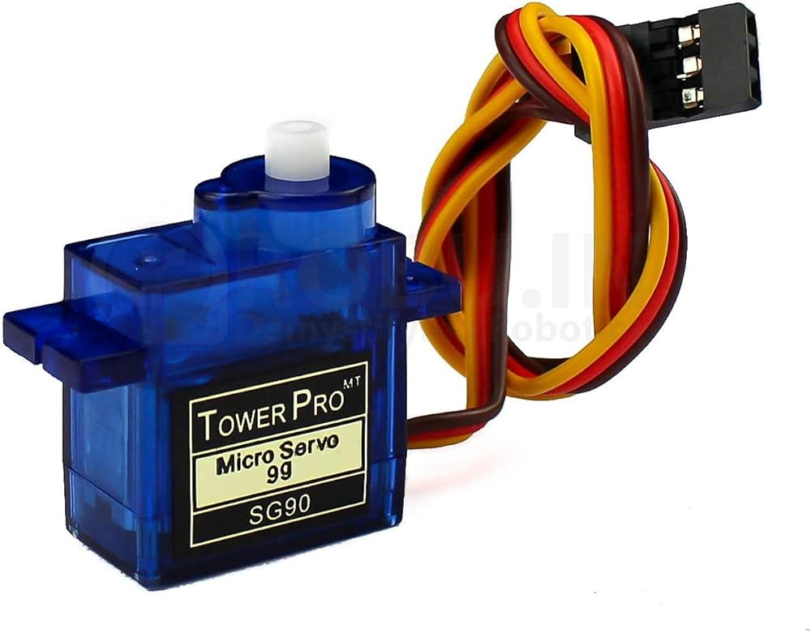
Stepper Motor
Moves in discrete steps (1.8° per step). 3D printers, CNC machines, camera sliders.
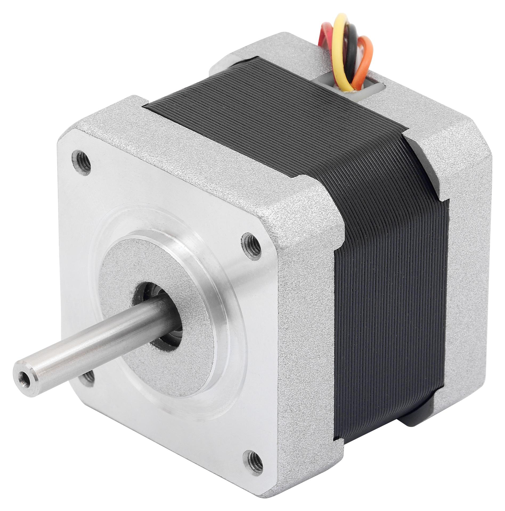
BLDC Motor (Brushless DC)
High efficiency, long life, high speed. Drones, EVs, computer fans.

| Criteria | DC Motor | Servo | Stepper | BLDC |
|---|---|---|---|---|
| Torque | Medium | Medium | High (low speed) | High |
| Position Control | No | Yes (0-180°) | Yes (steps) | With ESC |
| Precision | Low | High | Very High | Medium |
| Ease of Control | Easy | Very Easy | Moderate | Complex |
| Best Use Case | Wheels, fans | Robot arms, RC cars | 3D printers, CNC | Drones, EVs |
Selection guide: Need continuous spin? DC motor. Need precise angle? Servo. Need exact steps? Stepper. Need high efficiency & speed? BLDC.
4. Control Systems & PID
A control system reads sensor data, compares it to a desired value (setpoint), and commands actuators to reduce the error.
Open‑loop vs Closed‑loop
- Open‑loop: No feedback. Example: washing machine timer (runs 30 min regardless).
- Closed‑loop: Uses feedback to correct errors. Example: cruise control (keeps exact speed).
PID Control (The King of Controllers)
Reacts to current error. Big error → big correction. Leaves steady‑state error.
Accumulates past error over time. Eliminates steady‑state error.
Anticipates future error based on rate of change. Prevents overshoot.
Analogy (Shower temperature): P turns the knob proportional to how cold it is. I keeps turning if you've been cold for a while. D slows down as you approach the target to avoid overshooting.
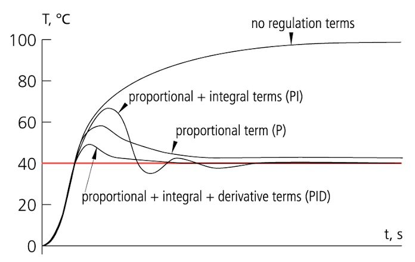
PID is used in drones, robot arms, CNC machines, temperature controllers, and almost any industrial automation.
5. Microcontrollers – The Brain
A microcontroller (MCU) is a tiny computer on a single chip: CPU + RAM + Flash + I/O pins + peripherals. It’s designed for real‑time hardware control without an operating system.
Arduino Uno/Nano/Mega
ATmega328P (Uno) – 16 MHz, 2 KB RAM, 32 KB Flash. Beginner‑friendly, huge community. Ideal for sensor interfacing and learning.

ESP32
Dual core, 240 MHz, 520 KB RAM, 4 MB Flash, Wi‑Fi + BLE. Perfect for IoT, edge AI, and connected robots.
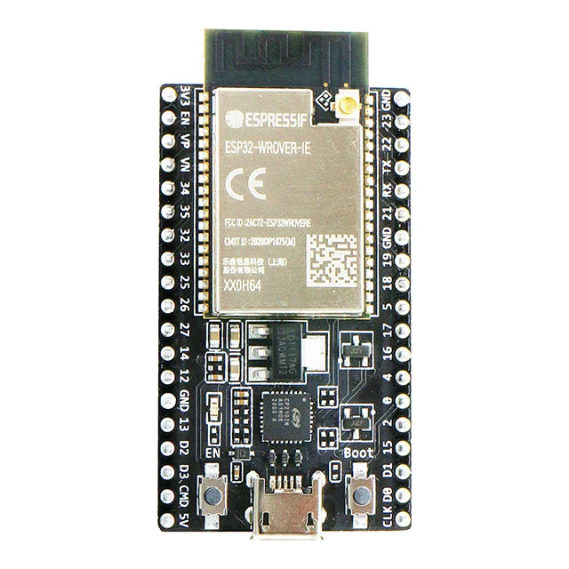
| Feature | Arduino Uno | ESP32 |
|---|---|---|
| Processor | ATmega328P (8‑bit) | Xtensa LX6 Dual‑Core (32‑bit) |
| Clock Speed | 16 MHz | 240 MHz |
| RAM | 2 KB | 520 KB |
| Flash | 32 KB | 4 MB |
| Wi‑Fi / Bluetooth | No | Yes (Wi‑Fi + BLE) |
| ADC Resolution | 10‑bit (0-1023) | 12‑bit (0-4095) |
| Price (approx.) | ₹400-600 | ₹300-500 |
| Best For | Learning, simple robotics | IoT, edge AI, connected devices |
6. Edge Computing – Why Robots Can’t Wait for the Cloud
Cloud computing has high latency (50‑500 ms), limited bandwidth, and reliability issues. Edge computing processes data right on the device (or a local gateway), enabling real‑time decisions.
Example: An obstacle‑avoiding robot using the cloud would crash because of the delay. With edge computing, the microcontroller reacts in milliseconds.
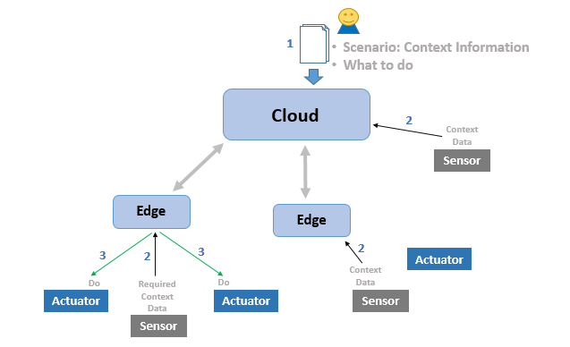
ESP32, Raspberry Pi, NVIDIA Jetson are common edge devices. Use cloud only for logging, updates, and non‑critical tasks.
7. MOSFET – The Power Switch
A MOSFET (Metal Oxide Semiconductor Field Effect Transistor) is an electronic switch that allows a microcontroller to control high‑power loads (motors, heaters, LEDs) without damaging itself. A small voltage on the Gate (3‑5V) turns on the high‑current path between Drain and Source.
Why needed: An Arduino pin can only supply 40 mA. A DC motor may need 1‑2 A. MOSFET bridges the gap.
Combine MOSFET with PWM (Pulse Width Modulation) to control motor speed efficiently.

Common models: IRFZ44N, IRL540N (logic‑level). Always use a flyback diode across inductive loads (motors).
8. Industry Applications
- Industrial Robotics: KUKA / ABB arms – welding, painting, assembly.
- Autonomous Vehicles: Sensor fusion (LiDAR + radar + cameras) + edge AI.
- Smart Manufacturing (Industry 4.0): Predictive maintenance, digital twins, AGVs.
- Internet of Things (IoT): ESP32 sensors, smart agriculture, smart cities.
- Medical Robotics: da Vinci surgical robot, rehabilitation exoskeletons, capsule endoscopy.
9. Key Takeaways
- Physical AI = AI + Sensors + Actuators + Control Systems acting together.
- Active sensors emit energy; passive sensors detect existing energy.
- DC motors for continuous spin, servos for angle, steppers for position, BLDC for efficiency.
- Closed‑loop control with PID gives smooth, accurate, stable motion.
- Microcontrollers (Arduino, ESP32) are self‑contained computers for real‑time hardware control.
- ESP32 adds Wi‑Fi, BLE, and much more power – great for IoT and edge AI.
- Edge computing processes data locally – essential for real‑time robotics.
- MOSFETs allow microcontrollers to switch high‑power loads safely.
- Physical AI is already everywhere – from your car's ABS to drone delivery.
- Learning this stack opens doors to robotics, automation, and cutting‑edge embedded systems.
10. Further Learning – Recommended Resources
Here are some of the best free and accessible resources to continue learning Physical AI, embedded systems, and robotics:
📺 YouTube Channels
- Andreas Spiess – Deep dives into ESP32, LoRa, IoT sensors.
- Paul McWhorter – Thorough Arduino tutorial series for absolute beginners.
- The Engineering Guy (Bill Hammack) – Brilliant explanations of sensors, motors, circuits.
- GreatScott! – Electronics projects and component explanations.
- Robotics Back-End – Clear tutorials on ROS2, Arduino, Raspberry Pi.
🌐 Free Courses & Interactive Platforms
- Arduino Project Hub – Thousands of open‑source projects with code.
- Random Nerd Tutorials – Best practical ESP32/Arduino tutorials.
- edX – “Introduction to Embedded Systems” (free audit).
- Coursera – IoT Specialization (UC Irvine).
- Wokwi – Online Arduino/ESP32 simulator (no hardware needed).
📖 Beginner‑Friendly Books
- “Programming Arduino” – Simon Monk
- “Make: Electronics” – Charles Platt
- “Exploring Arduino” – Jeremy Blum
- “ESP32 Development using the Arduino IDE” (free PDF searchable)
📄 Official Documentation
- Arduino Reference (arduino.cc/reference)
- ESP32 Datasheet & Tech Reference (Espressif)
- TensorFlow Lite for Microcontrollers
These resources are widely recommended by the embedded systems community. Start with YouTube tutorials and the Arduino Project Hub, then move to courses and books as you progress.
Documentation prepared at Tinkerers' Lab, Sanjivani University — for educational and internship reference.